Sanggunian: Plutus Education
Demand
Ang demand ay tumutukoy sa dami ng produkto at serbisyo na kaya at handang bilhin ng mga mamimili sa alternatibong persyo sa isang takdang panahon.
Malaki ang papel ng presyo sa pagtatakda ng demand ng mga mamimili. Ito ang pangunahing salik na nakapagpapabago ng demand ng mga mamimili. Ang demand ay maitatakda kung ang mamimili ay may kakayahan o kagustuhan na bilhin ang isang produkto at serbisyo.
Ang demand at presyo ay laging magkaugnay at ito ay mailalarawan sa iba't ibang paraan.
Kagustuhan + Kakayahan = Demand
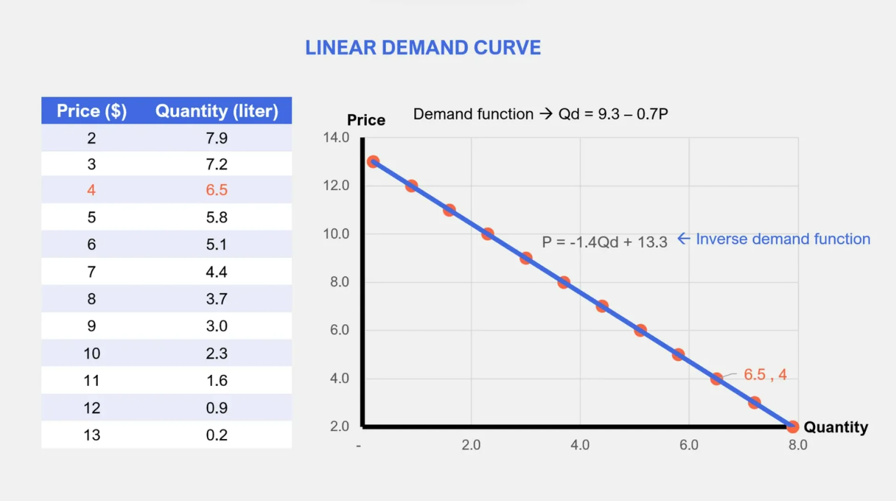
Sanggunian: penpoin.com
Demand Function
Ang demand function ay isang mathematical equation na nagpapakita ng ugnayan ng dalawang variables: ang Qd (Quantity demanded) na dependent variable at P (presyo) bilang independent variable. Ang Qd ay maaaring tumaas o bumaba sa bawat pagbabago ng pagtaas at pagbaba ng P.
Qd (Quantity Demanded): Ito ang dami ng produkto o serbisyo na gusto at kayang bilhin ng mga mamimili.
a (Intercept): Ipinapakita nito ang dami ng demand kapag ang presyo (P) ay zero.
b (slope ng demand function)
P (Price): Ito ang presyo ng produkto o serbisyo.
Qd = a - bP
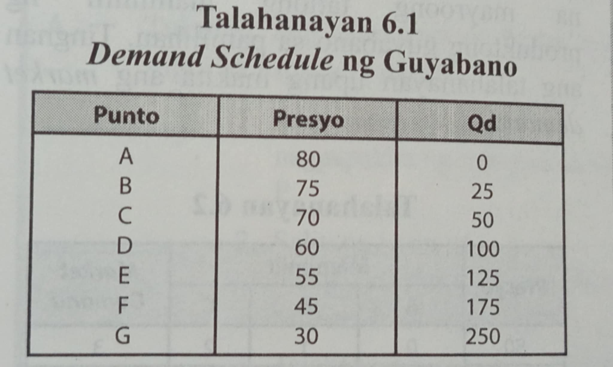
Sanggunian: Pag-unlad (Ekonomiks)
Demand Schedule
Ito ang dami ng produkto na handa at kayang bilhin ng mamimili sa alternatibong presyo sa isang takdang panahon. Ito ay isang talahanayan na nagpapakita ng demand ng mamimili sa bawat lebel ng presyo.
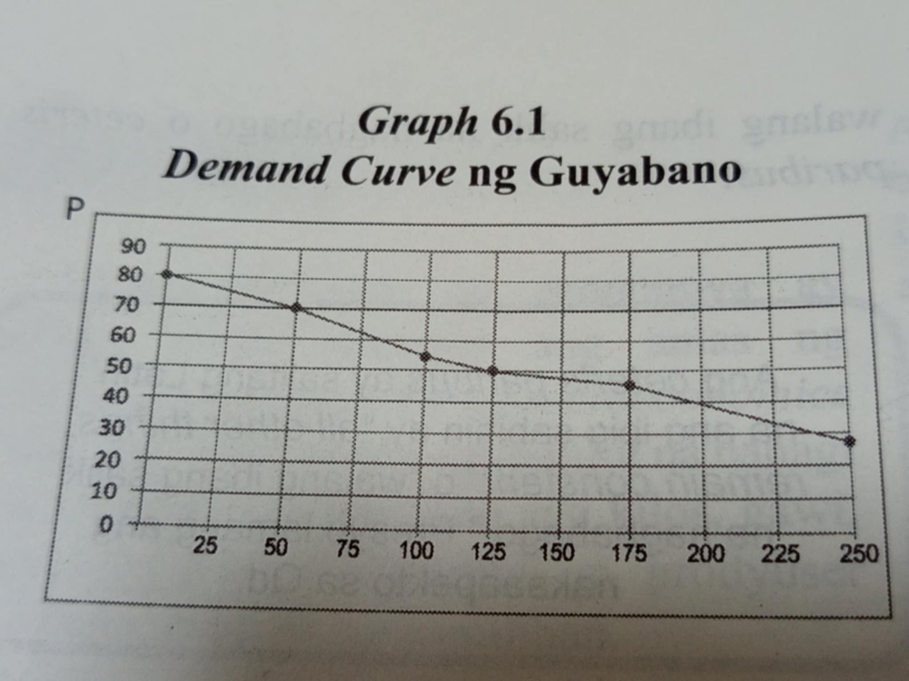
Sanggunian: Pag-unlad (Ekonomiks)
Demand Curve
Ang demand curve ay isang grapikong paglalarawan ng di-tuwirang relasyon ng presyo at dami ng demand. Ang graph ay binubuo ng dalawang axes, ang horizontal at vertical axes. Ang presyo ay sa Y axis at Qd sa X axis.
Upang makabuo ng demand curve, i-plot ang mga datos na makikita sa demand schedule. Matapos i-plot ang Qd at presyo, pagdugtong-dugtungin ang bawat punto upang mabuo ang demand curve.
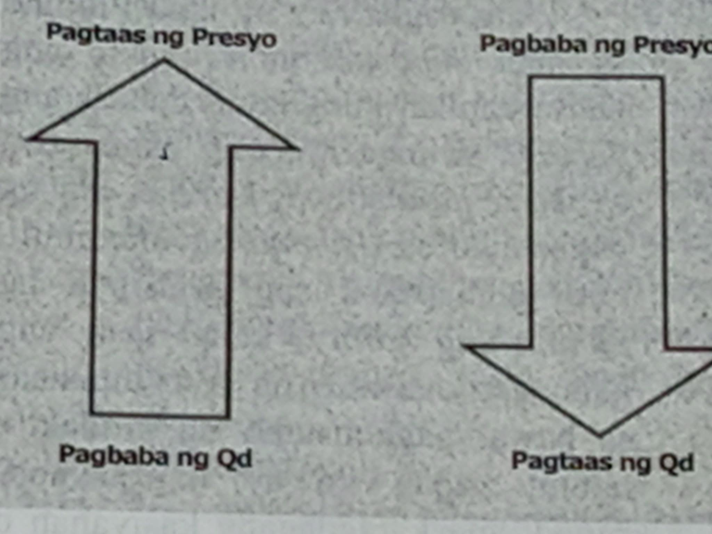
Sanggunian: Pag-unlad (Ekonomiks)
Batas ng Demand
Ang batas ng demand ay nagsasaad na habang ang presyo ng produkto ay tumataas, kumokonti ang bibilhing produkto ng mamimili.
Ngunit, kapag ang presyo ay bumaba, dumarami ang produktong bibilhin ng mga mamimili habang ang ibang salik ay hindi nagbabago.
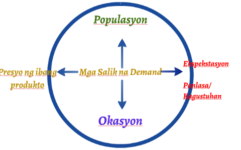
Sanggunian: Prezi
Mga Salik na Nakaaapekto sa Demand
1. Panlasa
2. Kita
3. Populasyon
4. Presyo ng Magkaugnay na Produkto
5. Okasyon
Sanggunian: MIT Sloan Management Review
Supply
Ang gawi at kilos ng mga produsyer ang pinag-aaralan sa bahaging ito. Sila ang tinatawag na supplier. Ang pagnanais at kakayahan ng mga supplier ang batayan ng pagtatakda ng supply sa pamilihan.
Kailangang sabay na umiiral ang mga katangiang ito upang masabi na may supply sa pamilihan.
Ito ay tumutukoy sa dami ng produkto at serbisyo na handa at nais ipagbili sa iba't ibang lebel ng presyo sa isang takdang panahon.Naaapektuhan din ng presyo ang supply.
Supply Function
Ito ay mathematical equation na ginagamitan ng dalawang variable, ang Qs bilang dependent variable at P bilang independent variable. Ang Qs (Quantity Supplied) ay naaapektuhan ng anumang pagbabago ng P (presyo).
Qs (Quantity Supplied): Ang dami ng produkto o serbisyo na handa at kayang ibigay ng mga prodyuser sa isang partikular na presyo.
c (Intercept): Ang quantity supplied kapag ang presyo ay zero
d (slope ng supply function)
P (Price): Ito ang presyo ng produkto o serbisyo.
Qs = c + dP
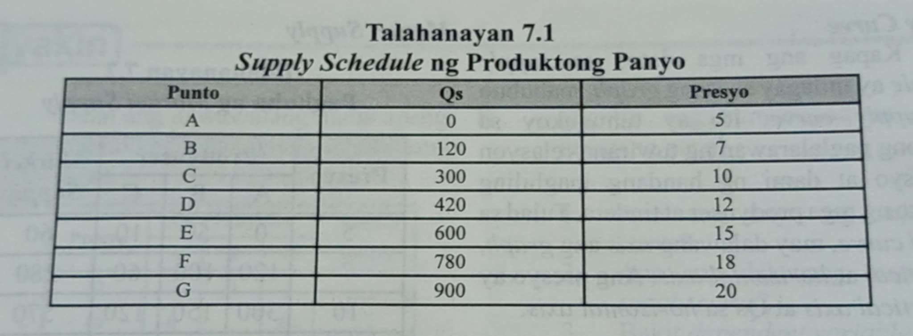
Sanggunian: Pag-unlad (Ekonomiks)
Supply Schedule
Ito ay isang talahanayan na nagpapakita ng dami ng produkto na handa at kayang ipagbili ng produsyer sa iba't ibang presyo sa isang takdang panahon.
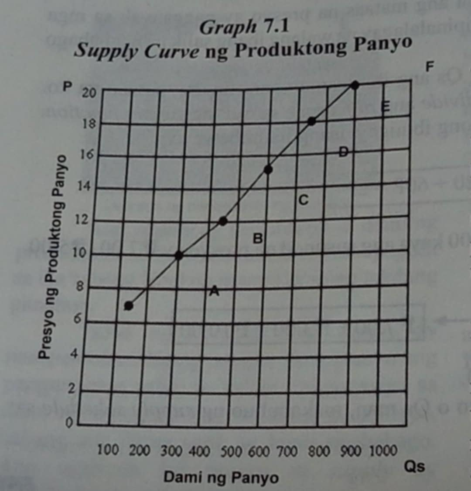
Sanggunian: Pag-unlad (Ekonomiks)
Supply Curve
Ito ay tumutukoy sa grapikong paglalarawan ng tuwirang relasyon ng presyo at dami ng handang ipagbiling produkto ng mga produsyer at tindera.
Tulad sa demand curve, may dalawang axis ang graph, ang vertical at horizontal axis. Ang presyo ay nasa vertical axis at Qs sa horizontal axis.
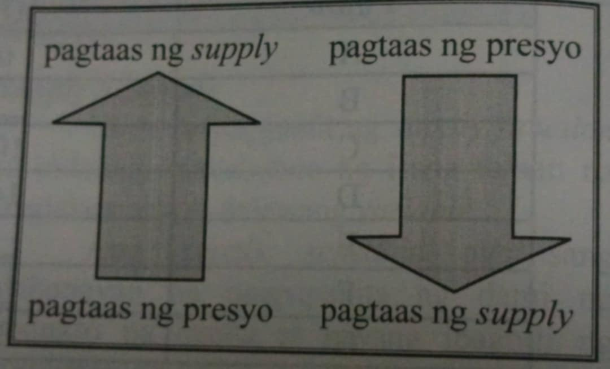
Sanggunian: Pag-unlad (Ekonomiks)
Batas ng Supply
Ang batas ng supply ay nagsasaad na habang ang presyo ng produkto ay tumataas, dumarami ang handang ipagbili ng mga produsyer. Ngunit, kapag ang presyo ay bumababa, nababawasan ang produkto na handang ipagbili ng mga produsyer, habang ang ibang salik ay hindi nagbabago.
Sa nasabing batas, ang presyo lamang ang nakaapekto sa supply. Ito ay naglalarawan ng tuwirang relasyon ng Qs at presyo.
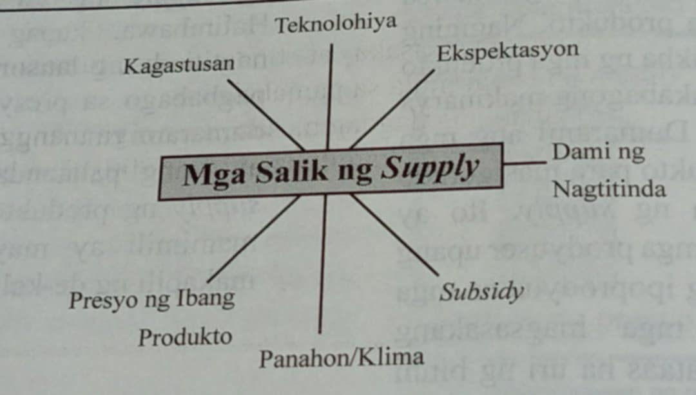
Sanggunian: Pag-unlad (Ekonomiks)
Mga Salik na Nakaaapekto sa Supply
1. Teknolohiya
2. Dami ng Nagtitinda
3. Subsidy
4. Gastos sa Produksiyon
5. Panahon/Klima
6. Presyo ng Ibang Produkto
7. Ekspektasyon
Elastisidad ng Supply
Ito ay tumutukoy sa kung gaano kalaki ang pagbabago sa dami ng supply ng isang produkto bilang tugon sa pagbabago sa presyo nito. May dalawang uri:
Elastik na Supply: Mas malaki ang pagbabago ng supply kaysa sa pagbabago ng presyo.
Di-Elastik na Supply: Mas malaki ang pagbabago ng presyo kaysa sa pagbabago ng supply.
Di-Elastik na Demand
Ang pagtugon ng mamimili sa pagbabago ng presyo ay hindi gaanong malaki. Kahit tumaas ang presyo, hindi gaanong nababawasan ang dami ng bibilhin. Ito ay karaniwan sa mga produktong kailangan tulad ng bigas, asukal, at gamot.
Ganap na Di-Elastik na Demand
Hindi nagbabago ang dami ng bibilhing produkto kahit magtaas ang presyo. Ang mamimili ay handang tanggapin ang anumang pagtaas ng presyo. Halimbawa nito ay ang gamot na kailangang inumin.
Elastik na Demand
Malaki ang pagbabago sa dami ng bibilhing produkto bilang tugon sa pagbabago ng presyo. Kung tumaas ang presyo, malaki ang ibababa ng demand. Ito ay karaniwan sa mga produktong may maraming pamalit.
Ganap na Elastik na Demand
Sa isang takdang presyo, handang bumili ang mamimili ng maraming produkto. Kapag nagbago ang presyo, mawawala ang demand.
Unitary na Demand
Ang pagbabago sa presyo ay katumbas ng pagbabago sa demand. Kung tumaas ang presyo ng 1%, bababa rin ang demand ng 1%. Ito ay karaniwan sa mga produktong maliit na bahagi lamang ng budget ng mamimili.
Ekwilibriyo
Kalayagan na walang sinuman sa mamimili/nagbibili ang gustong baguhin ang kasalukuyang sitwasyon sa pamilihan.
Ekwilibriyo
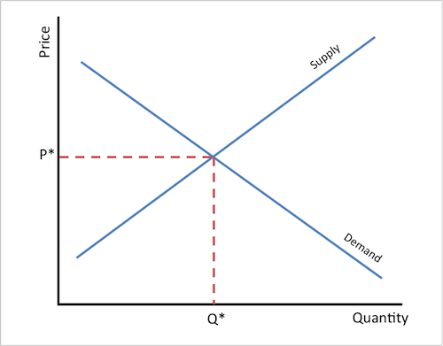
Sanggunian: Study.com
Balanse ang dalawang pwersa ng supply at demand
Disekwilibriyo
Ang dami ng demand ay maaaring kulang o sobra sa dami ng supply.
Dami ng Demand = Dami ng Supply
Disekwilibriyo

Sanggunian: Freepik
Hindi pantay o balanse ng quantity demanded at quantity supplied
Surplus
Ang dami ng supply ay mas marami kung ihahambing sa dami ng demand.
Dami ng Demand < Dami ng Supply
Surplus
Sanggunian: Inquirer.net
Mas marami ang dami ng supply kaysa sa kagustuhan ng mga mamimili
Shortage
Ang dami ng demand ay mas marami kung ihahambing sa dami ng supply.
Dami ng Demand > Dami ng Supply
Shortage

Sanggunian: Light Reading
Mas marami ang dami ng demand kaysa sa supply ng mga produkto o serbisyo
Ganap na Kompetisyon
Ang pamilihan ay sinasabing may ganap na kompetisyon kapag ang sinumang negosyante ay walang kapangyarihan na palitan o baguhin ang presyo sa pamilihan. Ito ay nagtataglay ng sumusunod na katangian:
1. Magkakatulad ang mga produkto
2. Marami ang mamimili at tindera ng produkto
3. May kalayaan sa paglalabas at pagpasok sa negosyo
4. Malayang paggalaw ng mga salik ng produksiyon
5. Sapat na kaalaman at impormasyon
Ganap na Kompetisyon
Sanggunian: Speed
Halimbawa ng Ganap na Kompetisyon: Palengke. Maraming maliliit na vendor ang nagbebenta ng mga katulad na produkto tulad ng prutas at gulay.
Di-ganap na Kompetisyon
Ang mga katangian ng hindi ganap na kompetisyon ay malaki ang pagkakaiba sa ganap na kompetisyon. Sa pagkakataong ito, may kumokontrol sa presyo, may hadlang sa pagpasok ng negosyante at tindera sa industriya, nabibilang ang dami ng mamimili at negosyante, at limitado ang pagpipiliang produkto.
Di-ganap na Kompetisyon
Sanggunian: Inquirer.net
Halimbawa ng Di-ganap na Kompetisyon: Meralco. May limitadong pagpipilian ang mga konsyumer dahil sa kontrol ng MERALCO sa imprastraktura ng kuryente.
Monopolyo
Ito ay isang estruktura ng pamilihan na iisa ang nagbebenta ng produkto; ibig sabihin nito ay may isang produsyer ang kumokontrol ng malaking porsiyento ng supply ng produkto sa pamilihan.
Ang monopolyo ay may malaking pagkakaiba sa ganap na kompetisyon, narito ang mga iyon:
1. Iisa ang produsyer
2. Kakayahang hadlangan ang kalaban sa negosyo
3. Walang malapit na kapalit ang produkto
Monopolyo
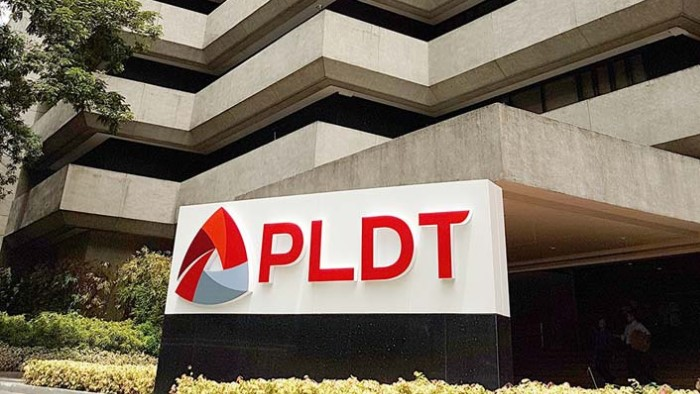
Sanggunian: Light Reading
Halimbawa ng Monopolyo: PLDT. Isang monopolyo ang PLDT dahil malawak ang kontrol nito sa imprastraktura ng komunikasyon.
Monopsonyo
Ito ang estruktura ng pamilihan na kabaliktaran ng monopolyo. Sa pagkakataong ito, mayroon lamang iisang mamimili ng produkto. Marami ang maaaring lumikha ng produkto at serbiyso, ngunit iisa lamang ang mamimili sa pamilihan.
Halimbawa, ang pamahalaan ang nag-iisang bumibili at nagbabayad sa serbisyo ng mga sundalo at militar.
Makikita natin ang kapangyarihan ng mamimili na pababain ang itinakdang presyo ng produkto at serbisyo na nais niyang bilhin. Magagawa ng mamimili na pumili ng produkto na may pinakamataas at pinakamagandang kalidad para sa kaniyang kapakinabangan.
Monopsonyo
Sanggunian: Philstar.com
Halimbawa ng Monopsonyo: PhilHealth. PhilHealth lamang ang halos nag-iisang bumibili ng serbisyong pangkalusugan mula sa mga ospital at doktor.
Oligopolyo
Ito ang estruktura ng pamilihan na kakaunti ang produsyer. Halos magkakapareho ang produkto at serbisyo na ipinagbibili. Ang mga ito ay nakikilala sa kanilang brand name. Ang ilan sa mga uri ng produkto sa estrukturang ito ay gasolina, kotse, ilaw, bakal, appliances, at iba pa.
Ilan sa mga aspekto na magpapaliwanag sa pagkilos ng mga oligopolista ay ang sumusunod:
1. Pagsasagawa ng Collusion
2. Hindi Naglalaban sa Presyo
3. Magkakatulad na Reaksiyon
Oligopolyo
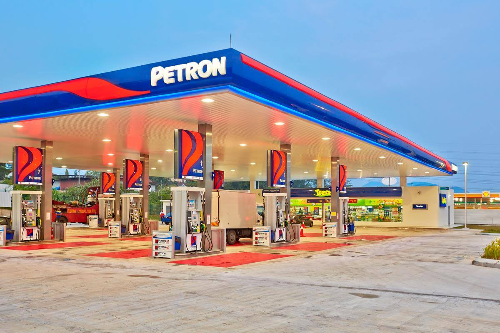
Sanggunian: Petron
Halimbawa ng Oligopolyo: Industriya ng mga Kumpanya ng Langis sa Pilipinas. Oligopolyo ang mga oil companies dahil kontrolado ng iilan ang presyo at supply ng langis.
Monopolistikong Kompetisyon
Ang mga katangian ng ganap na kompetisyon at monopolyo ay sabay na umiiral dito. Ibig sabihin, pare-pareho ang produkto na ipinagbibili ngunit magkakaiba ang mga sangkap na ginamit sa produkto, disenyo at ang nagprodyus.
Itinuturing na monopolista ang mga produsyer ng sariling produkto, sapagkat may kakayahan ang mga produsyer na itakda ang presyo ng kanilang produkto batay sa gastusing pamproduksiyon ng kanilang negosyo.
Monopolistikong Kompetisyon
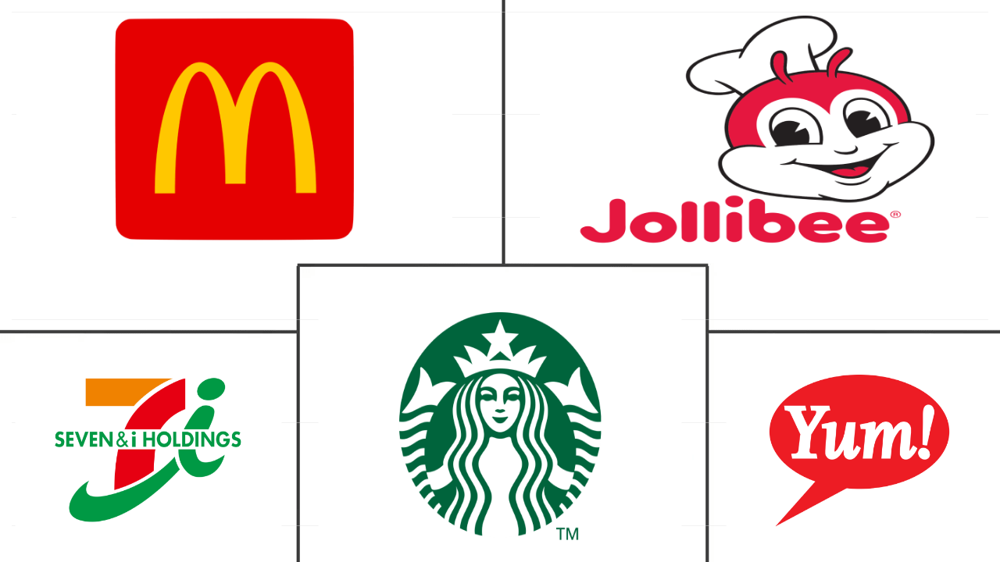
Sanggunian: Mordor Intelligence
Halimbawa ng Monopolistikong Kompetisyon: Industriya ng mga Restawran sa Pilipinas. Maraming kumpanya ang nag-aalok ng magkakaibang produkto, na nagbibigay sa kanila ng limitadong kontrol sa presyo.
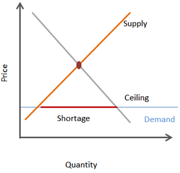
Sanggunian: Study.com
Price Control
Ang mga pangunahing bilhin tulad ng asukal, bigas, gatas, mantika, isda, manok, karne, at iba pa ay isinasailalim sa price control. Ipinatutupad ito kapag nahaharap sa matinding krisis at kalamidad ang maraming lalawigan sa bansa, tulad ng pagkakaroon ng oil spill, pagguho ng lupa, bagyo, lindol, at kapag naideklarang nasa state of calamity ang bansa.
Ito ay isinasagawa ng pamahalaan upang tulungan at bigyang-proteksiyon ang mga mamimili laban sa mga abusado at mapagsamantalang tindera at negosyante.
Ang pamahalaan ay nagtatadhana ng pinakamababa o pinakamataas na presyo na maaaring itakda sa mga produkto at serbisyo.
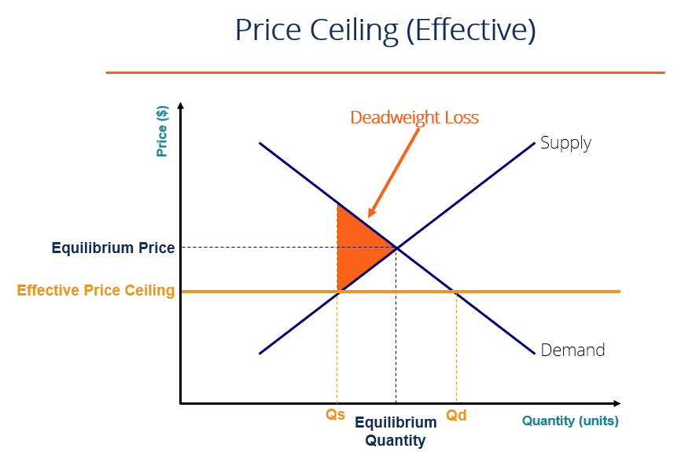
Sanggunian: Corporate Finance Institute
Price Ceiling
Ito ay ang pinakamataas na presyong itinakda ng pamahalaan sa pagbili ang mga produkto. Ito ay naaayon sa pagpapatupad ng price control ng pamahalaan. Itinatakda ito na mas mababa sa presyong ekilibriyo na umiiral sa pamilihan.
Ito ay isang pamamaraan ng pamilihan upang ang mga pangunahing produkto ay mabili nang mas mura. Ang pagtatakda nito sa pagbili ng mga produkto ay may epekto sa supply at demand sa pamilihan.

Sanggunian: Corporate Finance Institute
Price Floor
Ipinapatupad ng pamahalaan ang price floor para maprotektahan ang interes ng maliliit na magsasaka at mangingisda. Ang mga nagtatanim ng palay, asukal, tabako, niyog, kape, at iba pang produkto ay humihingi ng garantiya na maipagbibili nila ang kanilang produkto sa presyong mababayaran nila ang gastos ng produksiyon at magkaroon ng kaunting tubo.
Ang pagkaroon ng price support ay para sa kapakanan ng mga produsyer at magsasaka na makabawas sa mga gastusin sa produksiyon at magkamit ng kita para sa kanilang pamumuhay.
Ang floor price ay mas mataas kaysa sa presyong ekilibriyo na umiiral sa pamilihan. Itinuturing ng mga produsyer na ang presyong ekilibriyo ay hindi sapat upang tustusan ang kanilang gastusin sa produksiyon at pangangailangan sa buhay.